Train smarter for soccer—without spreadsheets.
Soccer Fitness Tracker turns your iPhone + Apple Watch into a match/training tracker built around how soccer is actually played: stop–go running, sprints, and changing intensity.
Install from the App Store, then start your first session right away. No account needed.
What you get
Everything you want after a match or training session—captured automatically and presented in a soccer-friendly way.
One-tap session tracking
Record matches, training, and drills with live distance, time, pace/speed, heart rate, calories, and more.
Route maps + movement heatmaps
Outdoor GPS sessions produce route maps, coverage, and movement patterns—great for learning positioning.
Soccer-focused intensity metrics
Track sprints, high-intensity running, speed zones, training load, and other effort indicators.
Heart rate insights
View average/max HR, HR zones, and recovery after hard sessions. Best with Apple Watch.
History + seasons
Review sessions, spot trends, and organize training blocks by season.
Apple Watch companion
Start and control workouts from your wrist and see key stats during play.
Screenshots
Real screenshots from the shipped app (iPhone, Apple Watch, and iPad).
Swipe to browse or use buttons.
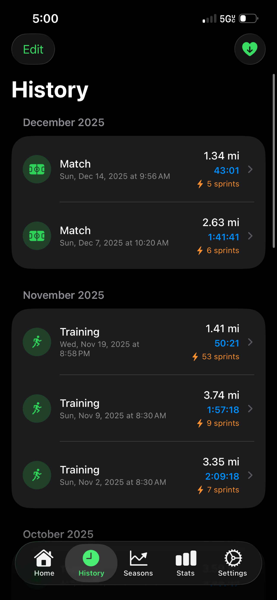
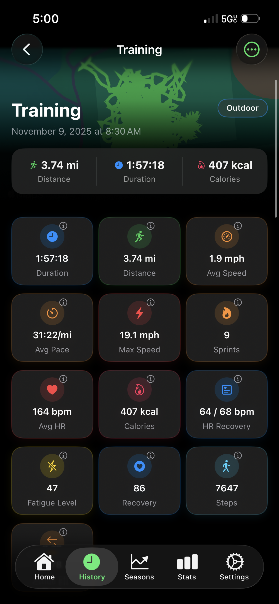
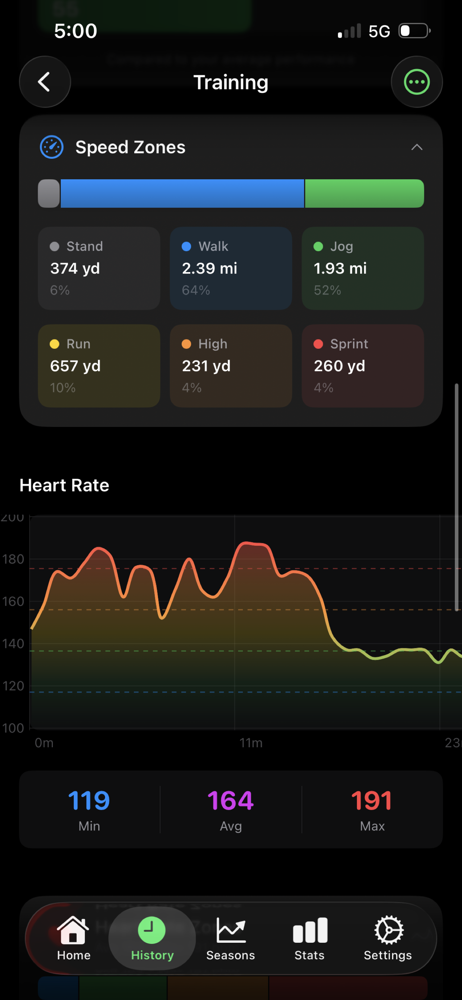
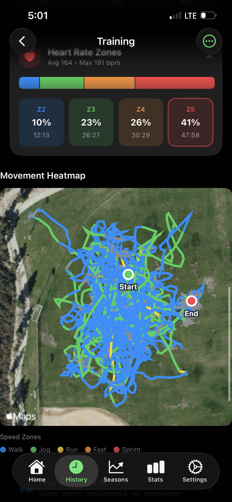

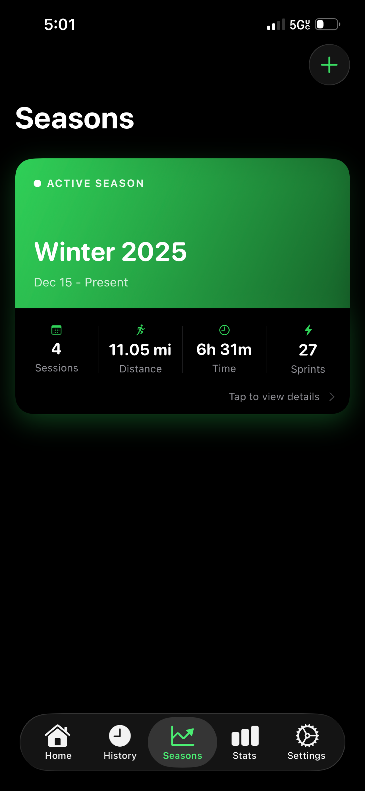
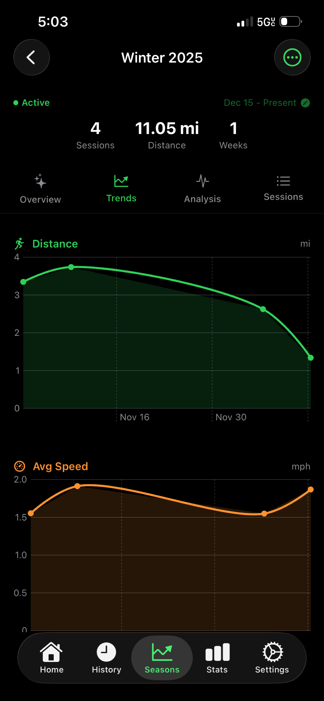
Quick start + live stats.
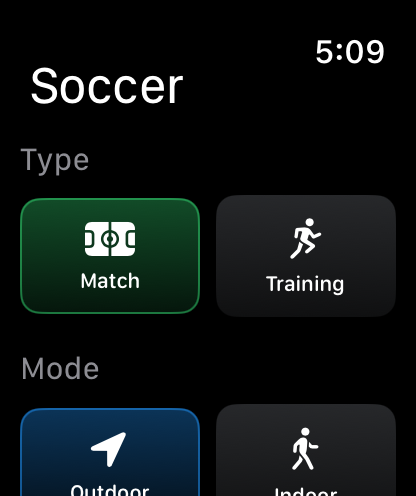

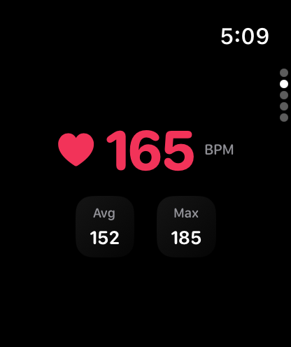
Big-screen review.
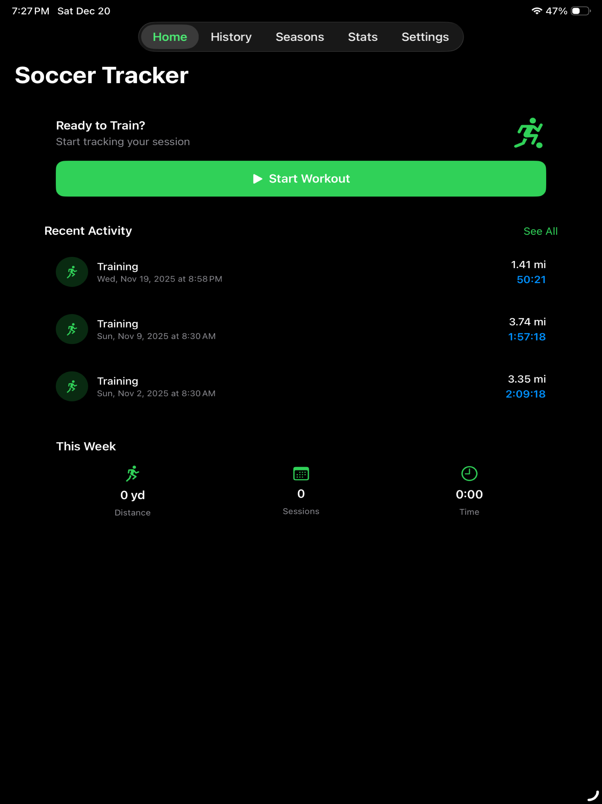
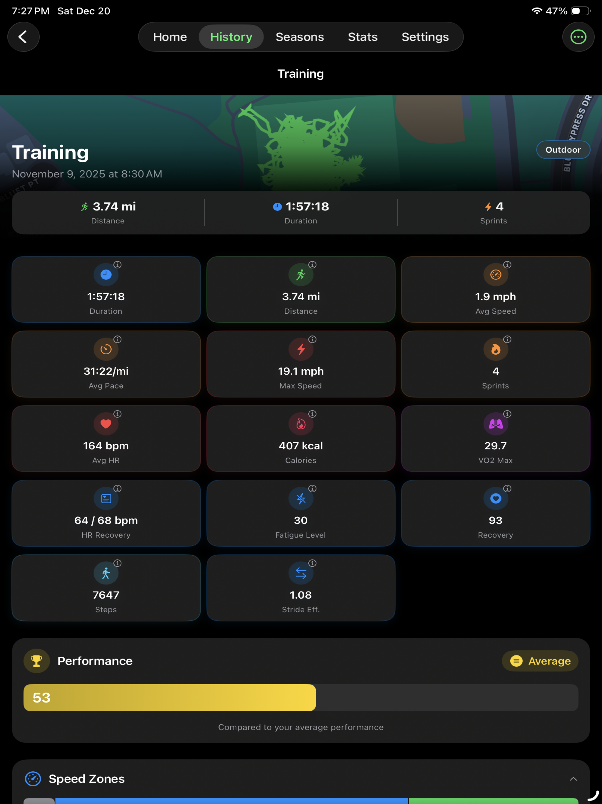
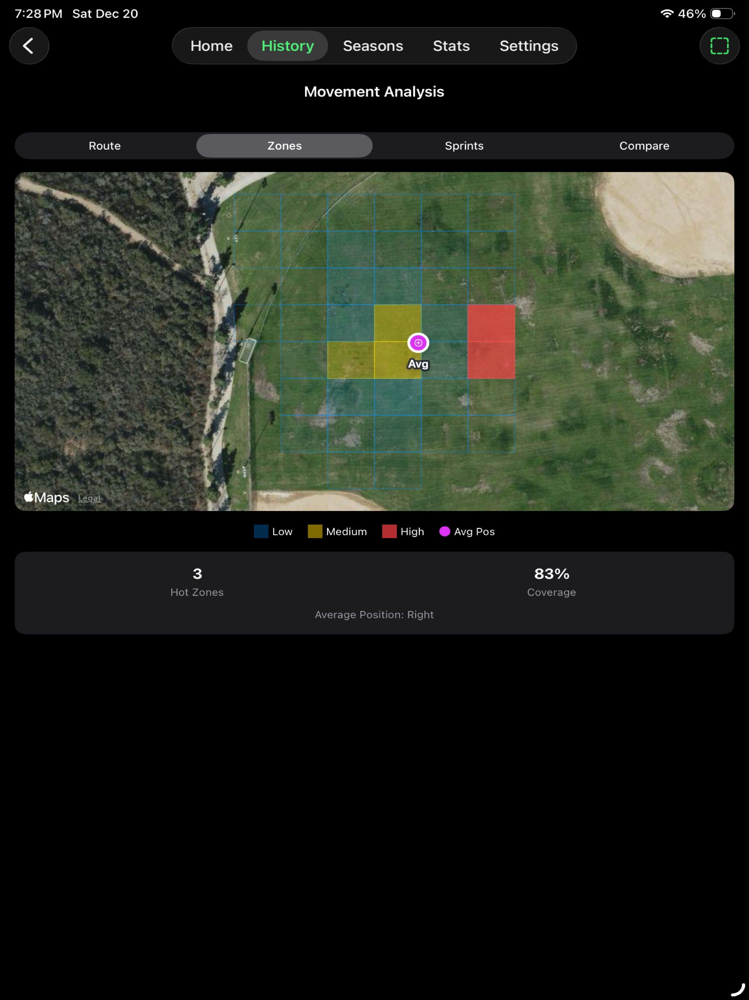
How it works
Start a session on iPhone or Apple Watch. Outdoor sessions record GPS to build your route and movement heatmaps. If you allow it, workouts can be saved to Apple Health.
Start
Pick session type (match/training/drill) and mode (outdoor/indoor).
Play
See live stats on iPhone or Apple Watch—distance, time, speed, and more.
Review
Get movement heatmaps, speed zones, sprints, and recovery insights.
Repeat
Organize sessions by season and track trends across weeks.
Privacy-first by design
No accounts. No ads. No cross-app tracking. Your data stays on your device and (optionally) in Apple Health.
On-device
Sessions and settings are stored locally on your devices (including an App Group container for iPhone + Watch).
You control permissions
Health + location access is always optional and can be changed anytime in iOS Settings.
FAQ
Common questions from new players and coaches.
How do I start a workout?
Open the app and tap Start. Choose Match, Training, or Drill and your mode, then begin recording.
Why does distance differ from Apple Fitness?
Apps apply different GPS smoothing, pause logic, and data-source selection (iPhone vs Watch).
Do you collect my data?
No. There are no accounts, no analytics tracking, and no ads. Your data stays on your device.
What’s best for GPS accuracy?
Apple Watch outdoors with good sky view, snug fit, and Low Power Mode off during workouts.
Ready for your next session?
Download Soccer Fitness Tracker from the App Store and start tracking matches or training with iPhone + Apple Watch.